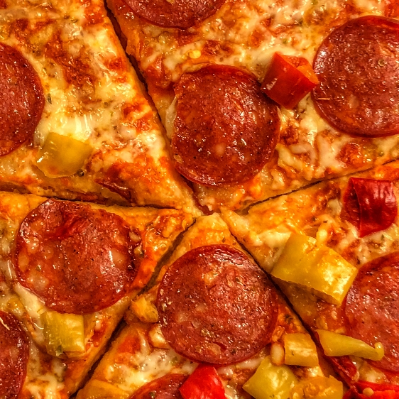

1
Forvarm ovnen til 225 grader med over- og undervarme.
2
Ta pizzaen ut av esken og legg den på rist med bakepapir.
3
Stek pizzaen i 12-14 minutter. For en ekstra sprø bunn kan den stekes på pizzastein.
4
Ta pizzaen ut av ovnen og skjær opp. Kan piffes opp med kombinasjon av aioli, tacosaus og pizzakrydder. Nyt!
